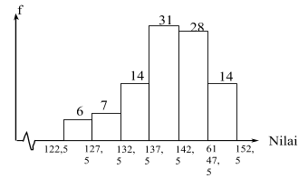

Soal Matematika
No.1
Persamaan grafik fungsi pada gambar adalah ....
a.f(x) = 3x
b.f(x) = 3x+1
c.f(x) = 3x – 1
d.f(x) = 3x + 1
e.f(x) = 3x – 1
JawabanC.
No.2
Dari angka 0, 1, 2, 4, 7, 8 akan dibuat bilangan yang terdiri dari tiga angka yang berbeda. Banyaknya bilangan berbeda yang kurang dari 760 adalah ….
a.65
b.76
c.86
d.90
e.98
JawabanB.
No.3
Nilai modus data-data pada histrogram berikut, adalah..

a.141,25
b.155,12
c.145,55
d.142,25
e.142,50
jawabanE.
No.4
Seorang pembuat kue mempunyai 4 kg gula dan 9 kg tepung. Untuk membuat sebuah kue jenis A dibutuhkan 20 gram gula dan 60 gram tepung, sedangkan untuk membuat sebuah kue jenis B dibutuhkan 20 gram gula dan 40 gram tepung. Jika kue A dijual dengan harga Rp 3.500,00/buah, dan kue B dijual dengan harga Rp 2.500,00/buah, maka pendapatan maksimum yang dapat diperoleh pembuat kue tersebut adalah ….
a.Rp 450.000,00.
b.Rp 375.000,00.
c.Rp 500.000,00 .
d.Rp 525.000,00.
e.Rp 550.000,00 .
jawabanC.
No.5
Tiga bilangan membentuk barisan geometri, jumlahnya sama dengan 26. Jika suku ke-2 ditambah 4 maka menjadi barisan aritmetika. Hasilkali tiga suku pada barisan geometri tersebut adalah ….
a.216
b.360
c.384
d.462
e.512